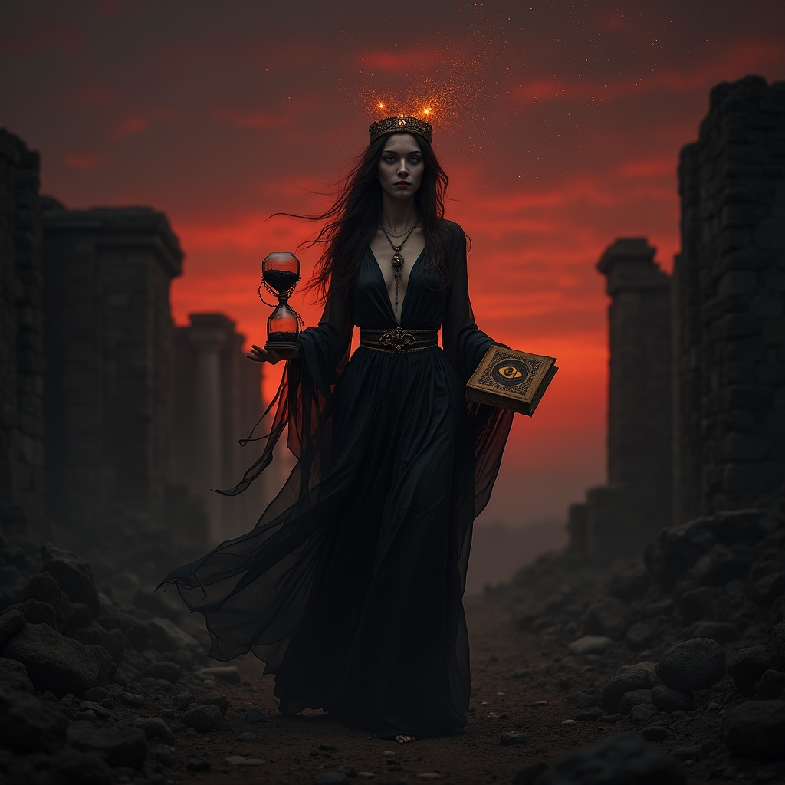

Some say Ioun’s ascension began not with ambition but with
desperation. As a mortal priestess, she served in a crumbling world
where time itself was unraveling, the sky bleeding into tomorrow and
yesterday. In her search for answers, she uncovered a fragment of
forbidden scripture that spoke of Kronos, the Titan of Time,
imprisoned beyond the veil of mortal reckoning. When she dared to read
the words aloud, she caught his attention—not with worship, but with
comprehension. Kronos touched her mind to test if she could bear a
glimpse of eternity, and in that instant she ceased to be wholly
human. Her flesh unraveled into thought, her heartbeat into memory,
and when the transformation ended, she stood as something more: the
keeper of knowledge and seer of what may come, no longer bound by the
thread of time she once feared.